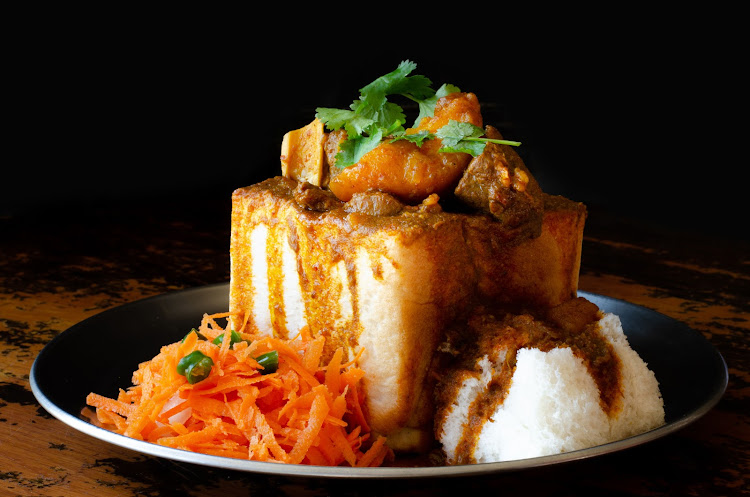

Bunny Chow

Bunny Chow-deliciously tasty South African street food, made aromatic spices, meat, chicken peas and potatoes served in hallow bread. A one of a kind sandwich
Ingredients
- 1 pound chicken thighs or breast cut in bite-sized pieces
- 1/2 cup canola or cooking oil
- 2 to 3 Curry leaves
- 1 teaspoon minced ginger
- 2 teaspoons minced garlic
- 1 Tablespoon curry powder or more
- 1 medium onion diced
- 2 medium tomatoes diced
- 1 cinnamon stick
- 1 teaspoon paprika
- 3 green cardamom pods light crushed
- 8 ounce or less potatoes cleaned and into cubes
- 5 ounce can chicken peas rinsed and drained
- 1/2 teaspoon cayenne pepper optional
- 7 cups or more chicken broth or water
- Salt and pepper to taste
Instructions
- Heat up a large Sauce-pan with oil, and add onions garlic, ginger, cinnamon stick, curry leaves , cardamom pods and curry powder, stir occasionally for about 2 to 3 minutes until onions is translucent
- Ad tomatoes followed by chicken, stir and saute for a about 2 to 3 more minutes. Add chicken stock/water if necessary to prevent any burns
- Next add chicken peas, potatoes and broth, about half a cup, add more as needed. Bring to a boil and let it simmer until sauce thickens, it might take about 25 minutes or more
- Adjust for salt, pepper and stew consistency
Return Page